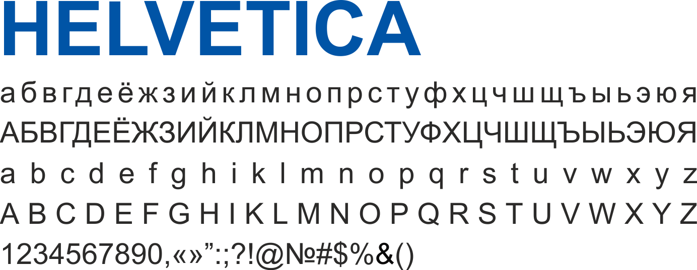

Правильно подобранный цвет в фирменном стиле способен добавить нужные характеристики, сделав его более привлекательным в глазах потребителя. Даже оттенки цвета в создании сайта вашего продукта – это важнейшая составляющая целостного образа. Точный и продуманный подбор цветовой гаммы для вашего бренда способен посодействовать в формировании желаемого имиджа.
Основные фирменные цвета для специальности «Электронная экономика» (цветовые константы): темно-синий, синий, светло-синий, серо-синий, охра. Модель CMYK используют при полноцветной печати. Модель RGB используют для обозначения цветов в электронных носителях информации, например: веб-сайт, презентация.
Палитра дополнительных цветов используется в оформлении мероприятий в зависимости от целевой аудитории мероприятия. Основным цветом при оформлении всегда является один из цветов основной палитры. Доля дополнительного цвета в макетах должны составлять не более 25%.
Красивый шрифт - очень важно, но еще важнее, чтобы шрифт был читабельный. Типографика - наука, которая рассказывает о правильности использования того или иного типа шрифта. Каллиграфия не стоит на месте, и постоянно развивается, предлагая нам все более разнообразные и красивые шрифты, которые могут отлично сочетаться друг с другом.

Montserrat был выбран в качестве корпоративной гарнитуры шрифта и должен использоваться для заголовка во всех информационных материалах, а так же должен использоваться в качестве промежуточного текста, сувенирной и полиграфической продукции. Второстепенный шрифт, который должен использоваться в том случае, когда использование основного шрифта невозможно – Helvetica. В случае необходимости (например, заголовки и подзаголовки) разрешается использование данного шрифта в жирном и полужирном начертании.